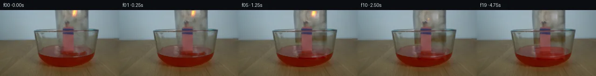

![首帧]()

Round 00
2026-11-05T17:47:28.168755+00:00像素候选变化代码 +215/−0inspection 更新
pixels 77e8359c9775384f · code 0602d0470e4d7d9f
查看本轮 generate.py 真实 diff
--- previous/generate.py
+++ current/generate.py
@@ -0,0 +1,215 @@
+"""Deterministic local photographic-layer continuation; no model or renderer.
+
+All visual input comes from first_frame.png. Source-derived reflection layers,
+subpixel translation, antialiased analytic liquid and flame layers are used.
+"""
+from pathlib import Path
+import json
+import numpy as np
+from PIL import Image, ImageDraw, ImageFilter
+import cv2
+from scipy.ndimage import gaussian_filter, map_coordinates
+from artifact_io import save
+
+ROOT = Path(__file__).resolve().parent
+W, H = 256, 144
+Y, X = np.mgrid[:H, :W].astype(float)
+SOURCE = np.asarray(Image.open(ROOT / 'first_frame.png').convert('RGB'))
+SRC = SOURCE.astype(float)
+
+
+def smooth(a, b, value):
+ u = np.clip((value-a)/(b-a), 0, 1)
+ return u*u*(3-2*u)
+
+
+def polygon(points, blur=.65):
+ scale = 4
+ m = Image.new('L', (W*scale, H*scale))
+ ImageDraw.Draw(m).polygon([(round(x*scale), round(y*scale)) for x, y in points], fill=255)
+ m = m.resize((W, H), Image.Resampling.LANCZOS)
+ if blur:
+ m = m.filter(ImageFilter.GaussianBlur(blur))
+ return np.asarray(m, dtype=float)/255
+
+
+def over(img, color, opacity):
+ a = np.clip(opacity, 0, 1)[..., None]
+ return img*(1-a)+np.asarray(color)*a
+
+
+# Remove only the source flame, retaining the photographed match heads.
+fire_mask = (((X-160)/11)**2 + ((Y-3)/19)**2 < 1) & (Y < 23)
+repair = cv2.inpaint(SOURCE, np.uint8(fire_mask)*255, 5, cv2.INPAINT_TELEA).astype(float)
+fire_alpha = gaussian_filter(fire_mask.astype(float), .8)
+NO_FIRE = SRC*(1-fire_alpha[..., None])+repair*fire_alpha[..., None]
+FIRE = SRC-NO_FIRE
+
+# Estimate the same wall/bowl as transmitted without the moving cylinder.
+# The two sample strips lie just outside its walls; this is an estimate, not
+# hidden reference imagery. The original broad bowl rim remains a fixed layer.
+background = NO_FIRE.copy()
+left = NO_FIRE[:, 111:116].mean(axis=1)
+right = NO_FIRE[:, 195:200].mean(axis=1)
+for x in range(116, 195):
+ f = (x-114)/(197-114)
+ background[:, x] = left*(1-f)+right*f
+
+jar_mask = polygon([(117.5,-10),(190.7,-10),(191,72),(189.3,92),
+ (181,98),(137,99),(125.5,95),(123,81)], .8)
+jar_mask *= 1-smooth(98, 102, Y)
+glass = (NO_FIRE-background)*jar_mask[...,None]
+
+# Inpaint the stationary support out of the *reflection layer*, using its
+# immediate neighbors. Otherwise a translated support-shaped ghost would move.
+for y in range(23, 100):
+ lo, hi = (135, 160) if y >= 36 else (136, 155)
+ x0, x1 = lo-5, hi+5
+ for x in range(lo, hi+1):
+ f = (x-x0)/(x1-x0)
+ glass[y,x] = glass[y,x0]*(1-f)+glass[y,x1]*f
+
+# The bowl's upper rim is at a fixed y, not part of the moving glass.
+for y in range(40, 50):
+ f = (y-39)/11
+ glass[y] = glass[39]*(1-f)+glass[50]*f
+glass = gaussian_filter(glass, (.38,.38,0))
+
+support = polygon([(135.6,36.7),(157.6,36.5),(158,94.4),(136,95)], .35)
+heads = polygon([(137,29),(140,24),(144,26),(147,24),(152,28),
+ (153,36),(149,40),(138,39)], .6)
+fixed = np.maximum(support, heads)
+# Front/back upper bowl lips must stay locked to the source.
+rim = polygon([(74,41),(210,40),(212,48),(158,50),(132,48),(75,50)], .55)
+fixed = np.maximum(fixed, rim)
+foreground = 1-smooth(102,112,Y)
+
+
… diff truncated; 128 more lines …